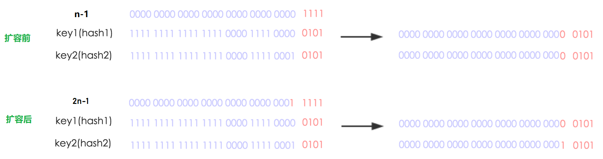

通过上一篇文章——ConcurrentHashMap原理(1)，相信读者对ConcurrentHashMap的基本原理有了一个初步认识，但是上一篇中还有一个遗留问题没有讨论到，那就是ConcurrentHashMap的扩容和数据迁移。本文中，我们将会对这两个问题进行讨论。
JDK1.8中，ConcurrentHashMap最复杂的部分就是扩容/数据迁移，涉及多线程的合作和rehash。我们先来考虑下一般情况下，如何对一个Hash表进行扩容。
Hash表的扩容，一般都包含两个步骤：
①table数组的扩容
table数组的扩容，一般就是新建一个2倍大小的槽数组，这个过程通过由一个单线程完成，且不允许出现并发。
②数据迁移
所谓数据迁移，就是把旧table中的各个槽中的结点重新分配到新table中。比如，单线程情况下，可以遍历原来的table，然后put到新table中。
这一过程通常涉及到槽中key的rehash，因为key映射到桶的位置与table的大小有关，新table的大小变了，key映射的位置一般也会变化。
ConcurrentHashMap在处理rehash的时候，并不会重新计算每个key的hash值，而是利用了一种很巧妙的方法。我们在上一篇说过，ConcurrentHashMap内部的table数组的大小必须为2的幂次，原因是让key均匀分布，减少冲突，这只是其中一个原因。另一个原因就是：
当table数组的大小为2的幂次时，通过
key.hash & table.length-1这种方式计算出的索引i，当table扩容后（2倍），新的索引要么在原来的位置i，要么是i+n。
我们来看个例子：

上图中：
扩容前，table数组大小为16，key1和key2映射到同一个索引5；
扩容后，table数组的大小变成 2*16=32 ，key1的索引不变，key2的索引变成 5+16=21。
而且还有一个特点，扩容后key对应的索引如果发生了变化，那么其变化后的索引最高位一定是1（见扩容后key2的最高位）。
这种处理方式非常利于扩容时多个线程同时进行的数据迁移操作，因为旧table的各个桶中的结点迁移不会互相影响，所以就可以用“分治”的方式，将整个table数组划分为很多部分，每一部分包含一定区间的桶，每个数据迁移线程处理各自区间中的结点，对多线程同时进行数据迁移非常有利，后面我们会详细介绍。
我们再来看下，ConcurrentHashMap何时会发生扩容。
在上篇文章中，我们提到过，当往Map中插入结点时，如果链表的结点数目超过一定阈值，就会触发链表 -> 红黑树的转换：
if (binCount >= TREEIFY_THRESHOLD)
treeifyBin(tab, i); // 链表 -> 红黑树 转换
现在，我们来分析下treeifyBin这个红黑树化的操作：
/**
* 尝试进行 链表 -> 红黑树 的转换.
*/
private final void treeifyBin(Node<K, V>[] tab, int index) {
Node<K, V> b;
int n, sc;
if (tab != null) {
// CASE 1: table的容量 < MIN_TREEIFY_CAPACITY(64)时，直接进行table扩容，不进行红黑树转换
if ((n = tab.length) < MIN_TREEIFY_CAPACITY)
tryPresize(n << 1);
// CASE 2: table的容量 ≥ MIN_TREEIFY_CAPACITY(64)时，进行链表 -> 红黑树的转换
else if ((b = tabAt(tab, index)) != null && b.hash >= 0) {
synchronized (b) {
if (tabAt(tab, index) == b) {
TreeNode<K, V> hd = null, tl = null;
// 遍历链表，建立红黑树
for (Node<K, V> e = b; e != null; e = e.next) {
TreeNode<K, V> p = new TreeNode<K, V>(e.hash, e.key, e.val, null, null);
if ((p.prev = tl) == null)
hd = p;
else
tl.next = p;
tl = p;
}
// 以TreeBin类型包装，并链接到table[index]中
setTabAt(tab, index, new TreeBin<K, V>(hd));
}
}
}
}
}
上述第一个分支中，还会再对table数组的长度进行一次判断：
如果table长度小于阈值MIN_TREEIFY_CAPACITY——默认64，则会调用tryPresize方法把数组长度扩大到原来的两倍。
从代码也可以看到，
链表 -> 红黑树这一转换并不是一定会进行的，table长度较小时，CurrentHashMap会首先选择扩容，而非立即转换成红黑树。
来看下tryPresize方法如何执行扩容：
/**
* 尝试对table数组进行扩容.
*
* @param 待扩容的大小
*/
private final void tryPresize(int size) {
// 视情况将size调整为2的幂次
int c = (size >= (MAXIMUM_CAPACITY >>> 1)) ? MAXIMUM_CAPACITY : tableSizeFor(size + (size >>> 1) + 1);
int sc;
while ((sc = sizeCtl) >= 0) {
Node<K, V>[] tab = table;
int n;
//CASE 1: table还未初始化，则先进行初始化
if (tab == null || (n = tab.length) == 0) {
n = (sc > c) ? sc : c;
if (U.compareAndSwapInt(this, SIZECTL, sc, -1)) {
try {
if (table == tab) {
Node<K, V>[] nt = (Node<K, V>[]) new Node<?, ?>[n];
table = nt;
sc = n - (n >>> 2);
}
} finally {
sizeCtl = sc;
}
}
}
// CASE2: c <= sc说明已经被扩容过了；n >= MAXIMUM_CAPACITY说明table数组已达到最大容量
else if (c <= sc || n >= MAXIMUM_CAPACITY)
break;
// CASE3: 进行table扩容
else if (tab == table) {
int rs = resizeStamp(n); // 根据容量n生成一个随机数，唯一标识本次扩容操作
if (sc < 0) { // sc < 0 表明此时有别的线程正在进行扩容
Node<K, V>[] nt;
// 如果当前线程无法协助进行数据转移, 则退出
if ((sc >>> RESIZE_STAMP_SHIFT) != rs || sc == rs + 1 ||
sc == rs + MAX_RESIZERS || (nt = nextTable) == null ||
transferIndex <= 0)
break;
// 协助数据转移, 把正在执行transfer任务的线程数加1
if (U.compareAndSwapInt(this, SIZECTL, sc, sc + 1))
transfer(tab, nt);
}
// sc置为负数, 当前线程自身成为第一个执行transfer(数据转移)的线程
// 这个CAS操作可以保证，仅有一个线程会执行扩容
else if (U.compareAndSwapInt(this, SIZECTL, sc, (rs << RESIZE_STAMP_SHIFT) + 2))
transfer(tab, null);
}
}
}
前两个分支没什么好说的，看下注释很容易理解，关键看第三个分支 —— CASE3：进行table扩容。CASE3其实分为两种情况：
注意：这两种情况都是调用了transfer方法，通过第二个入参nextTab进行区分（nextTab表示扩容后的新table数组，如果为null，表示首次发起扩容）。
第二种情况下，是通过CAS和移位运算来保证仅有一个线程能发起扩容。
我们来看下transfer方法，这个方法可以被多个线程同时调用，也是“数据迁移”的核心操作方法：
/**
* 数据转移和扩容.
* 每个调用tranfer的线程会对当前旧table中[transferIndex-stride, transferIndex-1]位置的结点进行迁移
*
* @param tab 旧table数组
* @param nextTab 新table数组
*/
private final void transfer(Node<K, V>[] tab, Node<K, V>[] nextTab) {
int n = tab.length, stride;
// stride可理解成“步长”，即数据迁移时，每个线程要负责旧table中的多少个桶
if ((stride = (NCPU > 1) ? (n >>> 3) / NCPU : n) < MIN_TRANSFER_STRIDE)
stride = MIN_TRANSFER_STRIDE;
if (nextTab == null) { // 首次扩容
try {
// 创建新table数组
Node<K, V>[] nt = (Node<K, V>[]) new Node<?, ?>[n << 1];
nextTab = nt;
} catch (Throwable ex) { // 处理内存溢出（OOME）的情况
sizeCtl = Integer.MAX_VALUE;
return;
}
nextTable = nextTab;
transferIndex = n; // [transferIndex-stride, transferIndex-1]表示当前线程要进行数据迁移的桶区间
}
int nextn = nextTab.length;
// ForwardingNode结点，当旧table的某个桶中的所有结点都迁移完后，用该结点占据这个桶
ForwardingNode<K, V> fwd = new ForwardingNode<K, V>(nextTab);
// 标识一个桶的迁移工作是否完成，advance == true 表示可以进行下一个位置的迁移
boolean advance = true;
// 最后一个数据迁移的线程将该值置为true，并进行本轮扩容的收尾工作
boolean finishing = false;
// i标识桶索引, bound标识边界
for (int i = 0, bound = 0; ; ) {
Node<K, V> f;
int fh;
// 每一次自旋前的预处理，主要是定位本轮处理的桶区间
// 正常情况下，预处理完成后：i == transferIndex-1，bound == transferIndex-stride
while (advance) {
int nextIndex, nextBound;
if (--i >= bound || finishing)
advance = false;
else if ((nextIndex = transferIndex) <= 0) {
i = -1;
advance = false;
} else if (U.compareAndSwapInt(this, TRANSFERINDEX, nextIndex,
nextBound = (nextIndex > stride ? nextIndex - stride : 0))) {
bound = nextBound;
i = nextIndex - 1;
advance = false;
}
}
if (i < 0 || i >= n || i + n >= nextn) { // CASE1：当前是处理最后一个tranfer任务的线程或出现扩容冲突
int sc;
if (finishing) { // 所有桶迁移均已完成
nextTable = null;
table = nextTab;
sizeCtl = (n << 1) - (n >>> 1);
return;
}
// 扩容线程数减1,表示当前线程已完成自己的transfer任务
if (U.compareAndSwapInt(this, SIZECTL, sc = sizeCtl, sc - 1)) {
// 判断当前线程是否是本轮扩容中的最后一个线程，如果不是，则直接退出
if ((sc - 2) != resizeStamp(n) << RESIZE_STAMP_SHIFT)
return;
finishing = advance = true;
/**
* 最后一个数据迁移线程要重新检查一次旧table中的所有桶，看是否都被正确迁移到新table了：
* ①正常情况下，重新检查时，旧table的所有桶都应该是ForwardingNode;
* ②特殊情况下，比如扩容冲突(多个线程申请到了同一个transfer任务)，此时当前线程领取的任务会作废，那么最后检查时，
* 还要处理因为作废而没有被迁移的桶，把它们正确迁移到新table中
*/
i = n; // recheck before commit
}
} else if ((f = tabAt(tab, i)) == null) // CASE2：旧桶本身为null，不用迁移，直接尝试放一个ForwardingNode
advance = casTabAt(tab, i, null, fwd);
else if ((fh = f.hash) == MOVED) // CASE3：该旧桶已经迁移完成，直接跳过
advance = true;
else { // CASE4：该旧桶未迁移完成，进行数据迁移
synchronized (f) {
if (tabAt(tab, i) == f) {
Node<K, V> ln, hn;
if (fh >= 0) { // CASE4.1：桶的hash>0，说明是链表迁移
/**
* 下面的过程会将旧桶中的链表分成两部分：ln链和hn链
* ln链会插入到新table的槽i中，hn链会插入到新table的槽i+n中
*/
int runBit = fh & n; // 由于n是2的幂次，所以runBit要么是0，要么高位是1
Node<K, V> lastRun = f; // lastRun指向最后一个相邻runBit不同的结点
for (Node<K, V> p = f.next; p != null; p = p.next) {
int b = p.hash & n;
if (b != runBit) {
runBit = b;
lastRun = p;
}
}
if (runBit == 0) {
ln = lastRun;
hn = null;
} else {
hn = lastRun;
ln = null;
}
// 以lastRun所指向的结点为分界，将链表拆成2个子链表ln、hn
for (Node<K, V> p = f; p != lastRun; p = p.next) {
int ph = p.hash;
K pk = p.key;
V pv = p.val;
if ((ph & n) == 0)
ln = new Node<K, V>(ph, pk, pv, ln);
else
hn = new Node<K, V>(ph, pk, pv, hn);
}
setTabAt(nextTab, i, ln); // ln链表存入新桶的索引i位置
setTabAt(nextTab, i + n, hn); // hn链表存入新桶的索引i+n位置
setTabAt(tab, i, fwd); // 设置ForwardingNode占位
advance = true; // 表示当前旧桶的结点已迁移完毕
}
else if (f instanceof TreeBin) { // CASE4.2：红黑树迁移
/**
* 下面的过程会先以链表方式遍历，复制所有结点，然后根据高低位组装成两个链表；
* 然后看下是否需要进行红黑树转换，最后放到新table对应的桶中
*/
TreeBin<K, V> t = (TreeBin<K, V>) f;
TreeNode<K, V> lo = null, loTail = null;
TreeNode<K, V> hi = null, hiTail = null;
int lc = 0, hc = 0;
for (Node<K, V> e = t.first; e != null; e = e.next) {
int h = e.hash;
TreeNode<K, V> p = new TreeNode<K, V>
(h, e.key, e.val, null, null);
if ((h & n) == 0) {
if ((p.prev = loTail) == null)
lo = p;
else
loTail.next = p;
loTail = p;
++lc;
} else {
if ((p.prev = hiTail) == null)
hi = p;
else
hiTail.next = p;
hiTail = p;
++hc;
}
}
// 判断是否需要进行 红黑树 <-> 链表 的转换
ln = (lc <= UNTREEIFY_THRESHOLD) ? untreeify(lo) :
(hc != 0) ? new TreeBin<K, V>(lo) : t;
hn = (hc <= UNTREEIFY_THRESHOLD) ? untreeify(hi) :
(lc != 0) ? new TreeBin<K, V>(hi) : t;
setTabAt(nextTab, i, ln);
setTabAt(nextTab, i + n, hn);
setTabAt(tab, i, fwd); // 设置ForwardingNode占位
advance = true; // 表示当前旧桶的结点已迁移完毕
}
}
}
}
}
}
tranfer方法的开头，会计算出一个stride变量的值，这个stride其实就是每个线程处理的桶区间，也就是步长：
// stride可理解成“步长”，即数据迁移时，每个线程要负责旧table中的多少个桶
if ((stride = (NCPU > 1) ? (n >>> 3) / NCPU : n) < MIN_TRANSFER_STRIDE)
stride = MIN_TRANSFER_STRIDE;
首次扩容时，会将table数组变成原来的2倍：
if (nextTab == null) { // 首次扩容
try {
// 创建新table数组
Node<K, V>[] nt = (Node<K, V>[]) new Node<?, ?>[n << 1];
nextTab = nt;
} catch (Throwable ex) { // 处理内存溢出（OOME）的情况
sizeCtl = Integer.MAX_VALUE;
return;
}
nextTable = nextTab;
transferIndex = n; // [transferIndex-stride, transferIndex-1]表示当前线程要进行数据迁移的桶区间
}
注意上面的transferIndex变量，这是一个字段，table[transferIndex-stride, transferIndex-1]就是当前线程要进行数据迁移的桶区间：
/**
* 扩容时需要用到的一个下标变量.
*/
private transient volatile int transferIndex;
整个transfer方法几乎都在一个自旋操作中完成，从右往左开始进行数据迁移，transfer的退出点是当某个线程处理完最后的table区段——table[0,stride-1]。
transfer方法主要包含4个分支，即对4种不同情况进行处理，我们按照难易程度来解释下各个分支所做的事情：
当旧table的桶table[i] == null，说明原来这个桶就没有数据，那就直接尝试放置一个ForwardingNode，表示这个桶已经处理完成。
else if ((f = tabAt(tab, i)) == null) // CASE2：旧桶本身为null，不用迁移，直接尝试放一个ForwardingNode
advance = casTabAt(tab, i, null, fwd);
注：ForwardingNode我们在上一篇提到过，主要做占用位，多线程进行数据迁移时，其它线程看到这个桶中是ForwardingNode结点，就知道有线程已经在数据迁移了。
另外，当最后一个线程完成迁移任务后，会遍历所有桶，看看是否都是ForwardingNode，如果是，那么说明整个扩容/数据迁移的过程就完成了。
没什么好说的，就是桶已经用ForwardingNode结点占用了，表示该桶的数据都迁移完了。
else if ((fh = f.hash) == MOVED) // CASE3：该旧桶已经迁移完成，直接跳过
advance = true;
如果旧桶的数据未迁移完成，就要进行迁移，这里根据桶中结点的类型分为：链表迁移、红黑树迁移。
①链表迁移
链表迁移的过程如下，首先会遍历一遍原链表，找到最后一个相邻runBit不同的结点。runbit是根据key.hash和旧table长度n进行与运算得到的值，由于table的长度为2的幂次，所以runbit只可能为0或最高位为1
然后，会进行第二次链表遍历，按照第一次遍历找到的结点为界，将原链表分成2个子链表，再链接到新table的槽中。可以看到，新table的索引要么是i，要么是i+n，这里就利用了上一节说的ConcurrentHashMap的rehash特点。
if (fh >= 0) { // CASE4.1：桶的hash>0，说明是链表迁移
/**
* 下面的过程会将旧桶中的链表分成两部分：ln链和hn链
* ln链会插入到新table的槽i中，hn链会插入到新table的槽i+n中
*/
int runBit = fh & n; // 由于n是2的幂次，所以runBit要么是0，要么高位是1
Node<K, V> lastRun = f; // lastRun指向最后一个相邻runBit不同的结点
for (Node<K, V> p = f.next; p != null; p = p.next) {
int b = p.hash & n;
if (b != runBit) {
runBit = b;
lastRun = p;
}
}
if (runBit == 0) {
ln = lastRun;
hn = null;
} else {
hn = lastRun;
ln = null;
}
// 以lastRun所指向的结点为分界，将链表拆成2个子链表ln、hn
for (Node<K, V> p = f; p != lastRun; p = p.next) {
int ph = p.hash;
K pk = p.key;
V pv = p.val;
if ((ph & n) == 0)
ln = new Node<K, V>(ph, pk, pv, ln);
else
hn = new Node<K, V>(ph, pk, pv, hn);
}
setTabAt(nextTab, i, ln); // ln链表存入新桶的索引i位置
setTabAt(nextTab, i + n, hn); // hn链表存入新桶的索引i+n位置
setTabAt(tab, i, fwd); // 设置ForwardingNode占位
advance = true; // 表示当前旧桶的结点已迁移完毕
}
②红黑树迁移
红黑树的迁移按照链表遍历的方式进行，当链表结点超过/小于阈值时，涉及红黑树<->链表的相互转换：
else if (f instanceof TreeBin) { // CASE4.2：红黑树迁移
/**
* 下面的过程会先以链表方式遍历，复制所有结点，然后根据高低位组装成两个链表；
* 然后看下是否需要进行红黑树转换，最后放到新table对应的桶中
*/
TreeBin<K, V> t = (TreeBin<K, V>) f;
TreeNode<K, V> lo = null, loTail = null;
TreeNode<K, V> hi = null, hiTail = null;
int lc = 0, hc = 0;
for (Node<K, V> e = t.first; e != null; e = e.next) {
int h = e.hash;
TreeNode<K, V> p = new TreeNode<K, V>
(h, e.key, e.val, null, null);
if ((h & n) == 0) {
if ((p.prev = loTail) == null)
lo = p;
else
loTail.next = p;
loTail = p;
++lc;
} else {
if ((p.prev = hiTail) == null)
hi = p;
else
hiTail.next = p;
hiTail = p;
++hc;
}
}
// 判断是否需要进行 红黑树 <-> 链表 的转换
ln = (lc <= UNTREEIFY_THRESHOLD) ? untreeify(lo) :
(hc != 0) ? new TreeBin<K, V>(lo) : t;
hn = (hc <= UNTREEIFY_THRESHOLD) ? untreeify(hi) :
(lc != 0) ? new TreeBin<K, V>(hi) : t;
setTabAt(nextTab, i, ln);
setTabAt(nextTab, i + n, hn);
setTabAt(tab, i, fwd); // 设置ForwardingNode占位
advance = true; // 表示当前旧桶的结点已迁移完毕
}
我们刚才说了，调用transfer的线程会自动领用某个区段的桶，进行数据迁移操作，当区段的初始索引i变成负数的时候，说明当前线程处理的其实就是最后剩下的桶，并且处理完了。
所以首先会更新sizeCtl变量，将扩容线程数减1，然后会做一些收尾工作：
设置table指向扩容后的新数组，遍历一遍旧数组，确保每个桶的数据都迁移完成——被ForwardingNode占用。
另外，可能在扩容过程中，出现扩容冲突的情况，比如多个线程领用了同一区段的桶，这时任何一个线程都不能进行数据迁移。
if (i < 0 || i >= n || i + n >= nextn) { // CASE1：当前是处理最后一个tranfer任务的线程或出现扩容冲突
int sc;
if (finishing) { // 所有桶迁移均已完成
nextTable = null;
table = nextTab;
sizeCtl = (n << 1) - (n >>> 1);
return;
}
// 扩容线程数减1,表示当前线程已完成自己的transfer任务
if (U.compareAndSwapInt(this, SIZECTL, sc = sizeCtl, sc - 1)) {
// 判断当前线程是否是本轮扩容中的最后一个线程，如果不是，则直接退出
if ((sc - 2) != resizeStamp(n) << RESIZE_STAMP_SHIFT)
return;
finishing = advance = true;
/**
* 最后一个数据迁移线程要重新检查一次旧table中的所有桶，看是否都被正确迁移到新table了：
* ①正常情况下，重新检查时，旧table的所有桶都应该是ForwardingNode;
* ②特殊情况下，比如扩容冲突(多个线程申请到了同一个transfer任务)，此时当前线程领取的任务会作废，那么最后检查时，
* 还要处理因为作废而没有被迁移的桶，把它们正确迁移到新table中
*/
i = n; // recheck before commit
}
}